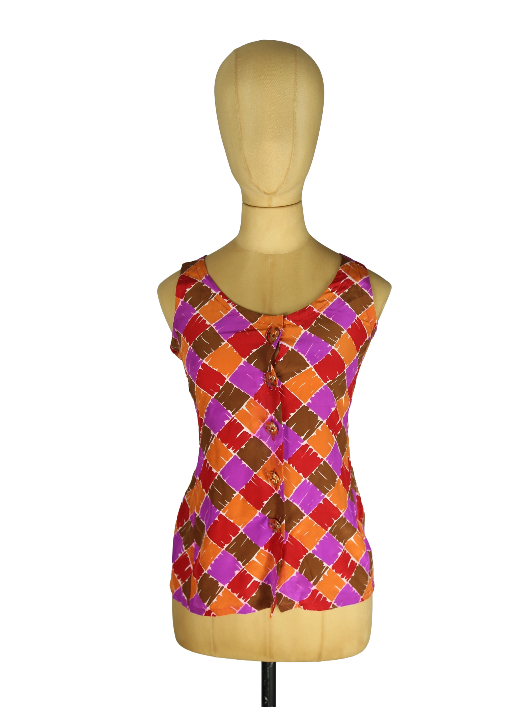

Yves Saint Laurent
120.00 €
Yves Saint Laurent Silk Dress Multicolor 36 Aus dem kuratierten Archiv von Disorder119. Ein grafisch geprägtes Archivstück aus der Yves Saint Laurent Rive Gauche Linie mit charakteristischem Farbspiel aus Rot, Orange, Violett und Braun. Der lebendige Print erinnert an expressive Pinselstriche und erzeugt eine dynamische Oberfläche. Der leichte Seidenstoff fällt weich und sorgt für eine fließende Silhouette. Der ärmellose Schnitt mit frontaler Knopfleiste verleiht dem Kleid eine klare, leicht ausgestellte Form. In Kombination mit dem markanten Muster entsteht ein Stück mit starker visueller Präsenz, das sowohl einzeln getragen als auch in modernen Layering-Looks eingesetzt werden kann. Details: Marke: Yves Saint Laurent Rive Gauche Farbe: Multicolor (Rot, Orange, Violett, Braun) Größe: 36 Passform: Schmale, leicht ausgestellte Silhouette Verschluss: Frontknopfleiste Material: Seide H
Im Archiv ansehen & in den Warenkorb →